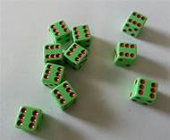

Projects
Conway Game of Life
In CISC 130, I wrote a program in C that ran Conway's Game of Life. You could set the starting positions of as many animals (represented as 1's) as you wanted by giving the row and column for the animal to be in or let it auto populate. It would then run one generation and then ask if you wanted another generation. This would keep happening unless everything went extinct leaving a blank board.
Tenzi like game

In CISC 230, I made a Tenzi like dice game where one could see how fast they could get all the dice to have the same value. The record's would be placed on a scoreboard that would last as long as the program was running. There were ten die objects in a game object. The game object and the scoreboard object were a part of the biggest object.
Single cycle computer
In CISC 340, I worked with a partner to replicate a single cycle processor design. It would 32-bit long values as input, and these vaules would tell it what command to run, and what registers and memory to use/change. The commands were add, nand (not and), lw (load word), sw (store word), beq (branch on equals), noop (no operation), and halt. I would typically write the starting code, and I would trouble shoot it with my partner.